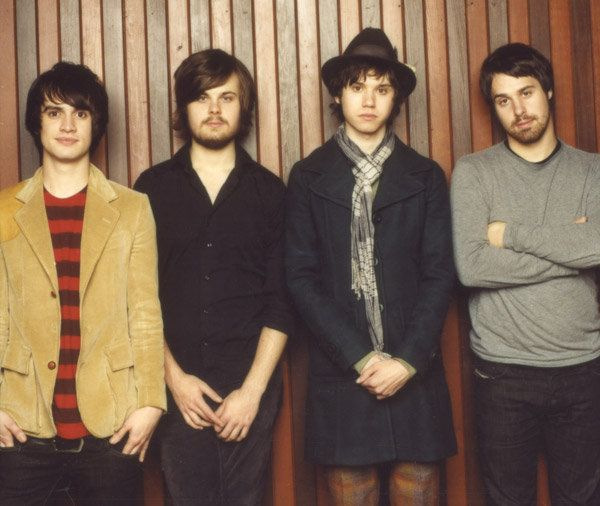
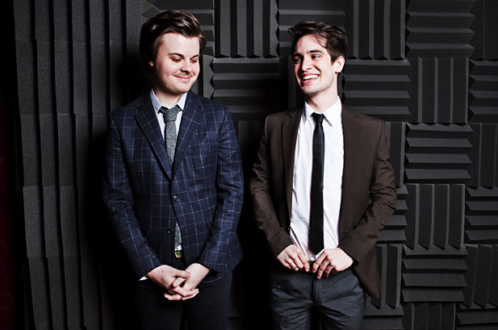
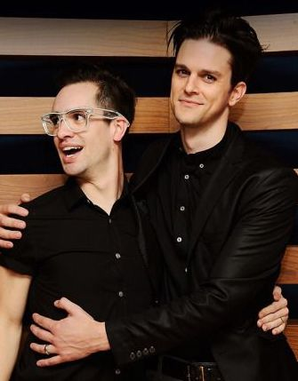
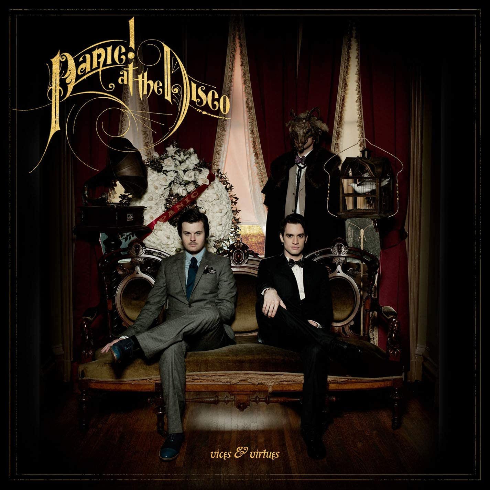
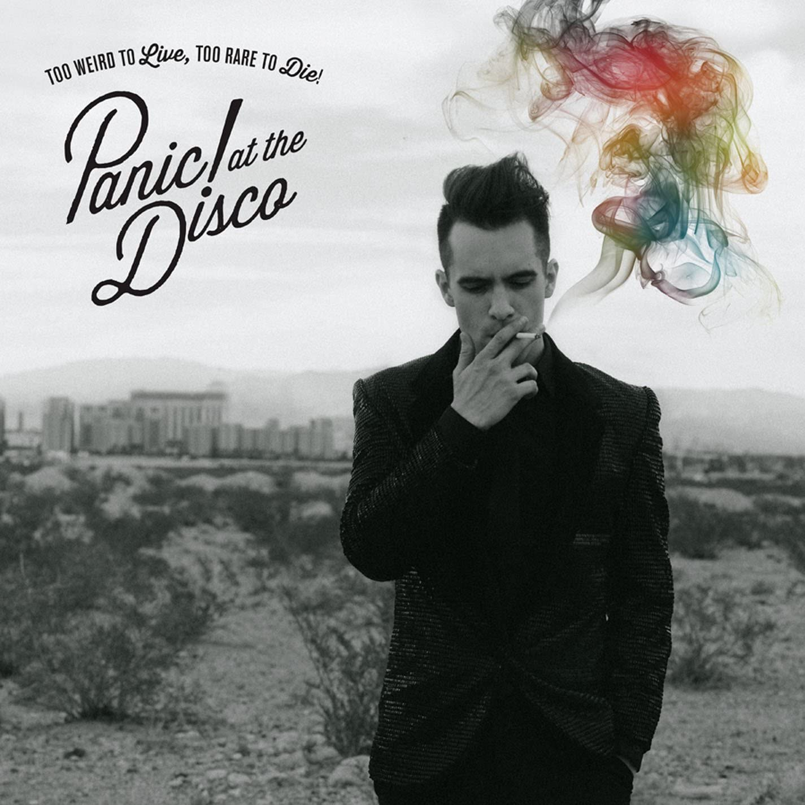
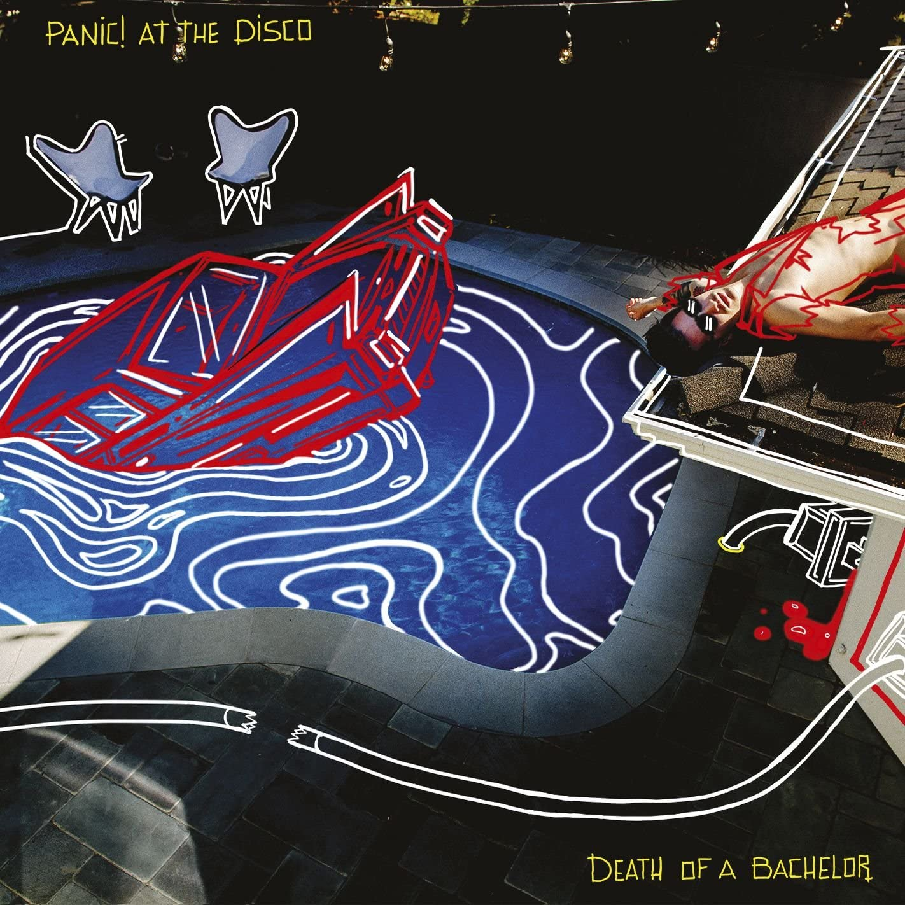
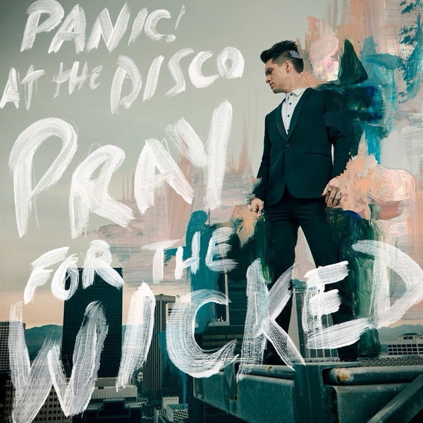

Formerly a pop rock band from Las Vegas, Nevada, Panic! At The Disco is now the solo project of American singer, songwriter and musician, Brendon Urie (see right). Panic! is known for their crazy music videos and experimentations in music genre, although they are largely described as alternative rock. Besides studio albums, Panic! has also produced soundtracks for movies such as Jennifer's Body, Suicide Squad, and Frozen 2.
Apart from his work as Panic!, Brendon has collaborated extensively with labelmate Fall Out Boy, lending his vocals to quite a few of their tracks. He also collaborated with Taylor Swift for her track, Me!, which reached No. 2 on the Billboard Hot 100 chart.
In June 2018, Urie launched the High Hopes Foundation to support other non-profit organisations that advocate for human rights.
Panic! was formed in 2004 by childhood friends Brendon Urie, Ryan Ross, Spencer Smith and Brent Wilson. Initially starting out as a Blink-182 cover band, they recorded their first original demos while still in high school. Upon receiving these demos, Fall Out Boy's bassist, Pete Wentz, was highly impressed and immediately asked to sign them to his label, Decaydance Records. In 2006, it was announced that original bassist, Brent Wilson, was removed from the band due to his lack of responsibility, and was replaced by Jon Walker.

L to R: Urie, Smith, Ross, Walker
In 2009, post the release of the band's second studio album, Ryan Ross and Jon Walker were revealed to be quitting the band due to creative differences. The two were inspired to continue working on the retro-inspired sound of the previous album, while Urie wanted to explore a more polished pop sound.

Smith and Urie
In 2010, Dallon Weekes, a previously touring member (bassist), was inducted as a full-time member. In 2013, prior to the recording of the band's third studio album, Spencer Smith unofficially left the band due to health and drug-related issues. In 2015, it was announced that he would be officially leaving the band. Soon after, Weekes returned to being just a touring member of the band, leaving Urie as the sole remaining member, with a solo project.

Urie and Weekes
Panic! currently has 6 studio albums, with none of them belonging to one specific genre, in true Panic! fashion. Click on each image to open the albums on Spotify.
2005
A Fever You Can't Sweat out was Panic!'s debut studio album, becoming an immediate commercial success. The album speaks about issues such as alcoholism, adultery and mental health. It combines pop punk and baroque pop. Its second single, 'I Write Sins Not Tragedies', became a Top 10 hit in the US.
2011
The lyrics on the album encompass themes such as manipulation and confusion, and contains a variety of musical styles and experimentation.
2013
Described as a 'party record', the album borrows from dance music, electronica, and hip hop.
2016
Death of a Bachelor marked the first album as a solo project, being written and recorded entirely by Urie, a vocalist and multi-instrumentalist. It was nominated for Best Rock Album at the 59th Grammy Awards.
You should really check out the music video of Emperor's New Clothes.
2018
This album is the latest from Panic!. Having received positive reviews upon release, it was also praised by critics for its Broadway-influenced sound.